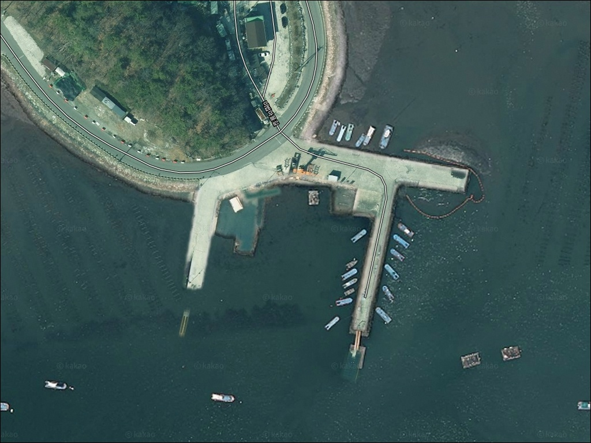
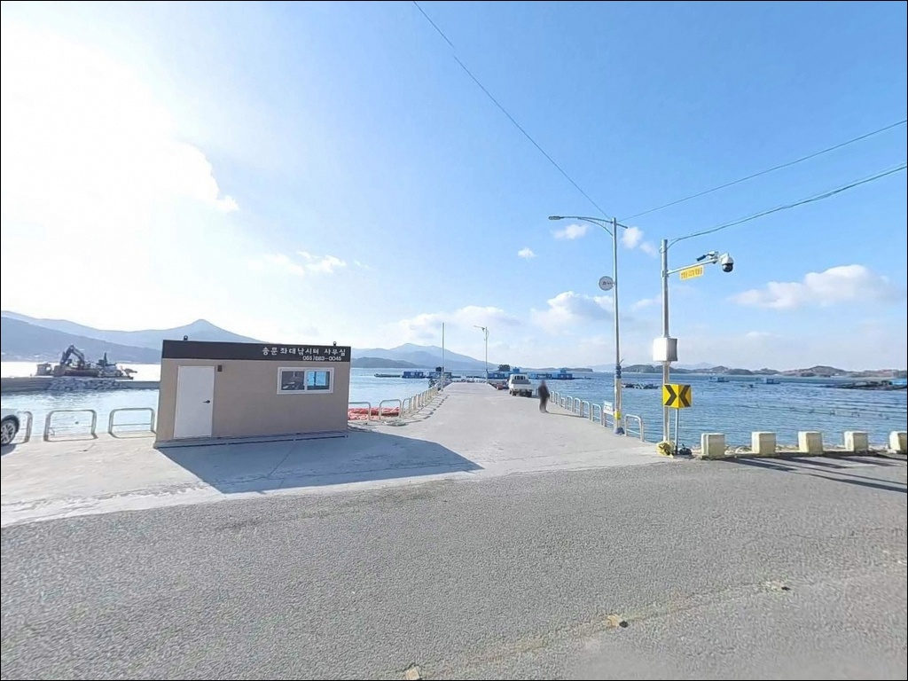
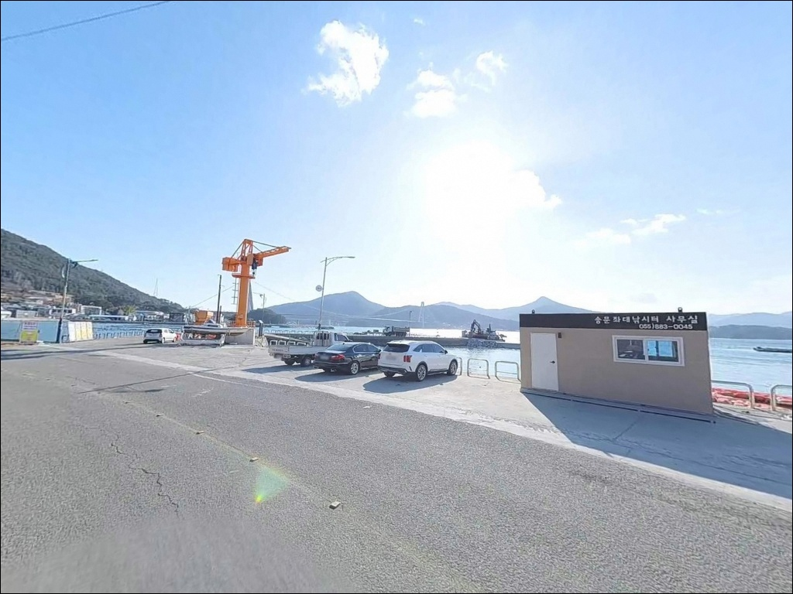
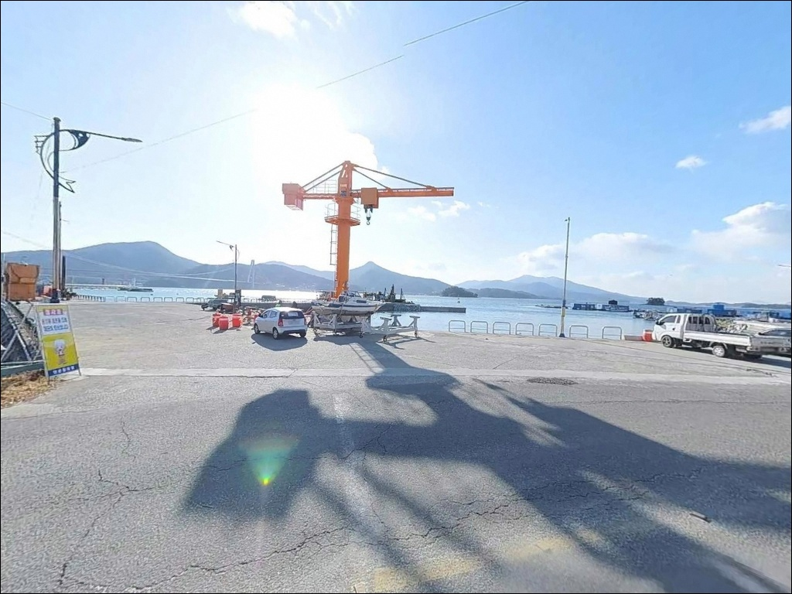
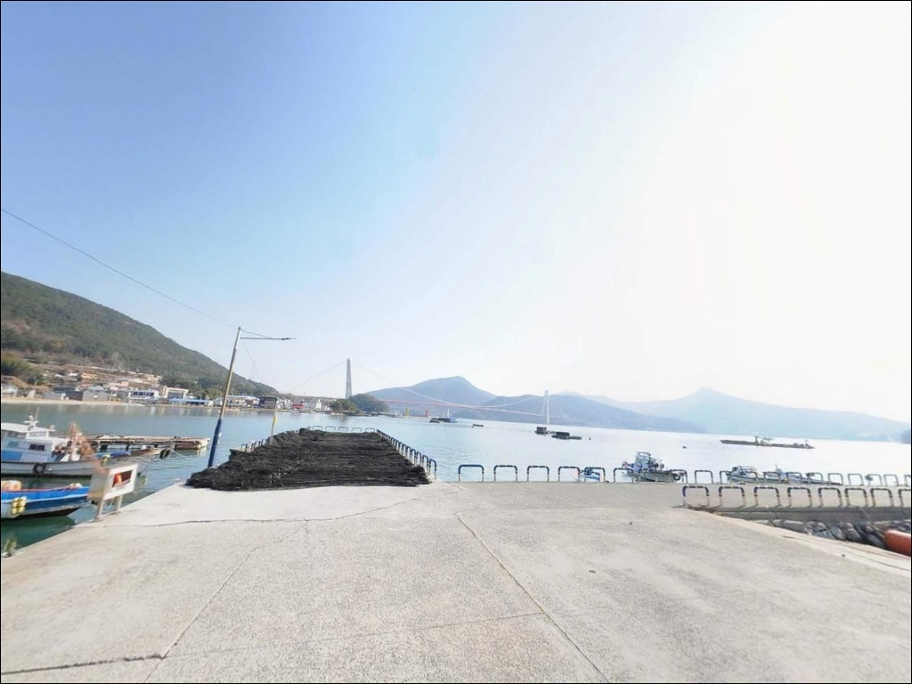
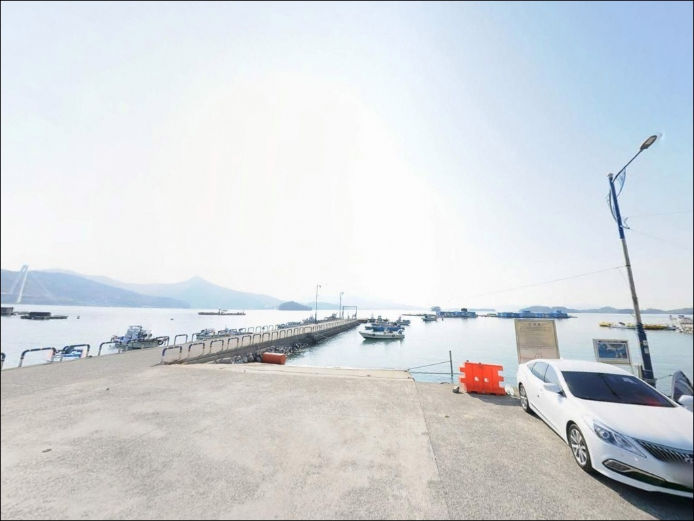
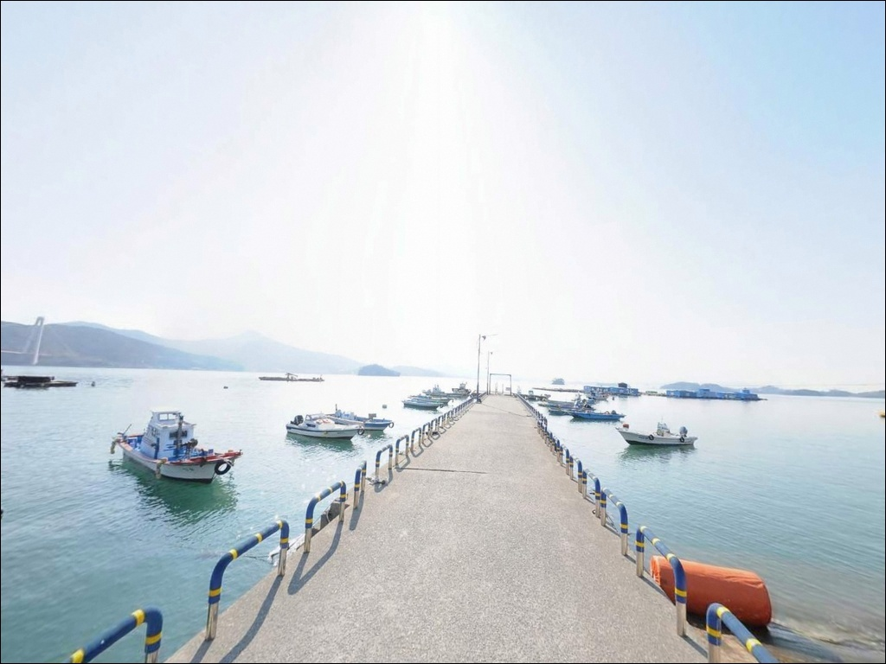
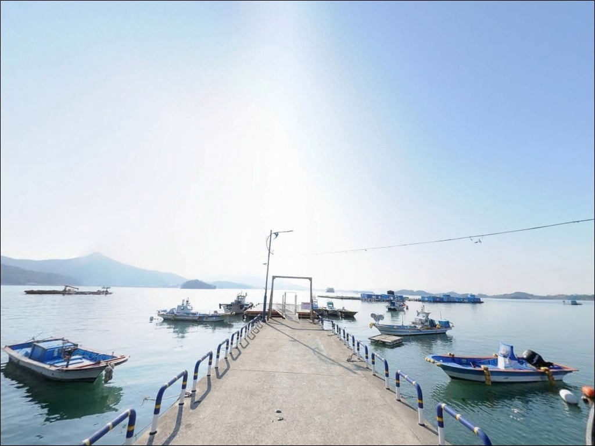
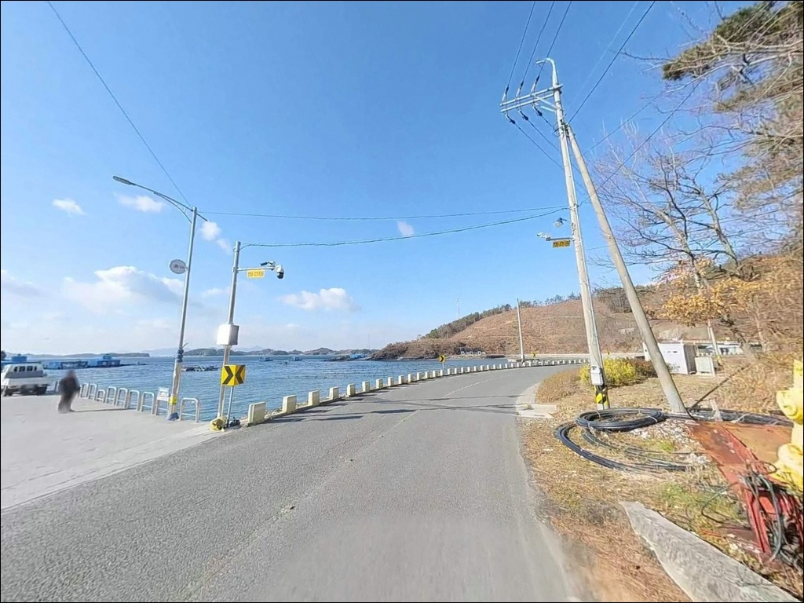

노량해협 본류에 봉돌이 흘러버리는 하동 송문선착장 원투낚시 물때
이 페이지에는 광고(제휴 링크 포함)가 있으며, 광고 링크를 통해 구매하면 운영자가 판매 수익 또는 수수료를 받을 수 있습니다. 포인트 사진: 카카오맵 스카이뷰·로드뷰. 이 페이지의 지도·사진 이미지는 카카오맵의 실제 서비스 이미지와 다를 수 있습니다.


포인트 안내
송문선착장
경남 하동군 금남면 송문리 825-6
노량해협 본류 조류가 스치는 구간에서
물때 계산 없이 원투 채비를 내리면
봉돌이 버티지 못하고 흘러버립니다.
송문선착장은 내해형 구조이지만
노량해협의 빠른 조류 영향을 직접 받는 해역이라
물때와 조류 방향이 낚시 여건의 전부를 결정하는
포인트입니다.
경남 하동군 금남면 송문리,
남해대교 서측 내해에 자리한 송문선착장은
어촌뉴딜300 사업으로 선착장 180m, 물양장 20m가
정비 완료된 연안낚시 거점입니다.
바로 옆에 해상낚시터(좌대)가 운영 중이어서
선착장 낚시와 좌대낚시를 동시에 선택할 수 있는
구조로 갖춰져 있습니다.
이 글은
송문선착장의 진입 동선, 차박 여건,
물때 판단 기준, 낚시 스타일별 공략 조건에 집중합니다.
조황 단정이나 특정 어종 보장은
이 글의 범위에 포함되지 않습니다.

1. 진입 동선과 포인트 접근성
송문선착장 진입로는 어촌뉴딜300 사업으로
양방향 교행이 가능하도록 확장된 포장도로입니다.
금남면 소재지 방향에서 마을 안길을 따라
선착장까지 이어지는 구조로,
승용차 기준 진입에 큰 어려움이 없는 편입니다.
다만 금남면 해안 특성상 선착장 진입 직전 구간은
폭이 좁아지는 마을 안길이 이어지는 경우가 있습니다.
장축 캠핑카나 대형 SUV를 운용하는 경우라면
출발 전 위성지도로 마을 안길 진입 구간을
미리 확인해 두는 편이 안전합니다.
주차는 선착장 주변 공터와
마을 안길 도로변 확장 구간을 활용하는 방식이 일반적입니다.
어선 작업 동선을 막지 않는 자리가 우선이며,
선착장 바로 뒤편 평탄지가
차량 접근과 낚시 거리 모두 양호한 위치입니다.

2. 차박 환경과 야간 체류 여건
송문리 일대는 소규모 어촌 마을로
민가 밀집도가 낮고 야간 차량 통행이 거의 없는 편입니다.
가로등이 선착장 구역에 일부 설치되어 있어
완전한 암흑 환경은 아니지만,
낚시를 마치고 조용히 하룻밤 머무는 용도로는
나쁘지 않은 환경입니다.
노량해협 내해 구조상 외항 파도 영향이 적어
수면은 잔잔한 편이며,
바람은 해협 방향에 따라 달라질 수 있으므로
기상 예보를 당일 아침 다시 확인하는 것이
기본 습관입니다.
선착장 주변 공터를 차박 공간으로 활용할 수 있지만,
어선 작업 동선과 겹치지 않는 자리를
먼저 확인해야 합니다.
차박이란 차량을 숙박 공간으로 활용하며
현장에서 하룻밤 머무는 여행 방식입니다.
소형 선착장 주변에서 차박을 계획한다면
수세식 화장실 사용이 어려울 수 있으므로
사전에 금남면 소재지에서 해결하고 진입하는 편이
현실적인 준비입니다.


3. 주변 편의시설 및 인프라 현황
송문선착장 반경 3km 이내,
금남면 소재지 방향으로 이동하면
편의점, 식당, 약국, 주유소를 이용할 수 있습니다.
낚시 소품이나 먹거리는 출발 전에 준비하거나
면 소재지에서 미리 해결하고 선착장으로 진입하는 방식이
효율적입니다.
응급 상황이 발생할 경우
하동읍 방향으로 약 15km 거리에
하동군립병원이 위치합니다.
출발 전 비상약품과 충분한 식수를
차에 실어두는 것이 기본 준비입니다.

4. 진입 전 반드시 챙겨야 할 준비사항
송문선착장에서 가장 먼저 확인할 것은
물때입니다.
노량해협은 조류 변화가 빠르고 강한 해역으로,
사리 전후에는 채비가 흘러 원투 자리를 잡기 어렵습니다.
조금 전후 또는 만조·간조 전후를 기준으로
출발 시각을 맞추는 것이 이 포인트 운용의 기본입니다.
내해형이라도 기상 변화는 빠를 수 있어
기상청 예보를 당일 아침 다시 확인하는 습관이 필요합니다.
원투 채비는 강한 조류에 밀리지 않도록
봉돌 무게를 여유 있게 준비하는 편이 좋습니다.
어선이 접안하는 마을 선착장 특성상
어선 이동 동선과 어구 위치를 미리 파악하고
자리를 잡는 것이 기본 매너입니다.
야간에는 구명조끼와 헤드랜턴을 반드시 지참합니다.
선착장 끝단이나 물양장 구간은
이끼와 물기로 미끄러운 경우가 있으므로
발밑 확인을 게을리하지 않는 것이 중요합니다.

5. 지형 기반 낚시 여건 분석
송문선착장의 핵심은
노량해협 서측 내해에 자리한
180m 규모의 정비된 선착장 구조입니다.
어촌뉴딜300 사업으로 확장·준설이 완료되어
선착장 끝단과 물양장 구간에서
수심이 급변하는 포인트 구간이 형성되어 있습니다.
내해형 구조이므로 외항 파도 영향은 적지만,
노량해협 본류 조류가 이 해역을 통과하는 시간대에는
조류 세기가 상당합니다.
수면이 잔잔해 보이더라도
선착장 콧부리 전면은 조류가 먼저 변하는 구간이어서
물때표 확인 없이 자리 선정을 결정하지 않는 것이
이 포인트를 제대로 공략하는 방식입니다.
바닥 지형은 내만형 특성상
내항은 얕고 외측으로 나갈수록 깊어지는 구조입니다.
암반과 모래가 혼합된 구성이며,
선착장 끝단에서 수로 방향이
수심 변화와 조류 흐름이 가장 활발한 자리입니다.
출조 전 금남면 일대 조황 검색을 먼저 해보시기 바랍니다.


조류 조건에 따라 달라지는 낚시 스타일
이 포인트에서 지형 조건에 가장 잘 맞는 낚시는
원투낚시입니다.
선착장 끝단에서 수로 방향으로 장타를 보내
수심 변화 구간 바닥층을 노리는 방식으로,
조류가 적당히 흐르는 조금 전후 타이밍에
채비 무게를 조류 세기에 맞춰 조정하는 것이
이 포인트 원투낚시의 기본 조건입니다.
찌낚시도 유효한 방식입니다.
선착장 외항 석축 라인을 따라
반유동 채비로 조류에 흘리는 방식이 어울리며,
내만 특성상 수면이 잔잔한 시간대에
채비 운용이 안정적인 편입니다.
이 일대 해역에서 기대해 볼 수 있는 어종은
숭어, 감성돔, 도다리, 노래미입니다.
가을철에는 갑오징어 에깅도 노려볼 수 있습니다.
에깅이란 갑오징어·무늬오징어를 대상으로
에기(인조 미끼)를 사용하는 루어낚시 방식입니다.
야간에는 선착장 가로등 주변에서
소형 지그헤드 채비로 볼락 라이트게임도 가능하며,
집어등을 활용하면 포인트 형성이 용이한 편입니다.
선착장 바로 옆에 운영 중인 해상낚시터(좌대)는
채비 준비가 번거로운 경우 유용한 대안입니다.
선착장 연안낚시와 좌대낚시를 상황에 맞게
병행 선택할 수 있는 구조가
송문선착장의 가장 실용적인 장점 중 하나입니다.

7. 대안 포인트와 플랜 B 동선
송문선착장 자리가 여의치 않거나
조류가 너무 강해 채비 운용이 불가능한 상황이라면
노량항이 첫 번째 대안입니다.
송문선착장에서 차로 5분 이내 거리에 위치하며,
발판이 정비된 대형 항구 구조로
진입과 주차 여건이 안정적입니다.
같은 노량해협 해역 패턴을 공유하므로
물때 조건은 동일하게 적용됩니다.
동일 금남면 해안선에서
조금 더 이동하면 대치리선착장이 있습니다.
주차 여건과 낚시 공간이 송문선착장과 유사하며,
원투낚시 특화된 구조로 알려져 있습니다.
입질이 없거나 자리가 붐빌 경우
금남면 해안선을 따라 이동하는
플랜 B 동선으로 활용하기 좋습니다.
노량항에서는 선착장 도선 서비스를 통해
대도(하동 유일 유인도) 방면 섬 낚시도
연계 가능합니다.
갯바위와 방파제 낚시를 원하는 경우라면
노량항을 거점으로
대도 방면 추가 이동을 검토해볼 수 있습니다.

물때를 알면
송문선착장이 다르게 보입니다
원투낚시나 찌낚시를 즐기는 낚시인이라면
노량해협 조류가 통과하는 내해에서
복수 방식으로 공략해볼 수 있는
이 포인트의 지형 구조는 잘 맞습니다.
어촌뉴딜 사업으로 발판과 진입로가 정비되어
처음 방문하는 낚시인도 접근하기 어렵지 않습니다.
반면 물때 계산 없이 진입하거나
조류가 강한 사리 전후에 원투 채비를 내리면
봉돌이 버티지 못하는 상황을 맞닥뜨릴 수 있습니다.
물때 확인, 봉돌 여분 준비, 어선 동선 배려,
이 세 가지를 갖추고 간다면
노량해협 조류를 활용하는 재미가 있는
출조가 될 수 있는 곳입니다.
선착장 바로 옆 해상낚시터와
주변 차박 공간을 함께 활용한다면,
낚시와 하룻밤 체류를 동시에 즐기기 좋은
금남면의 조용한 해안 거점이 됩니다.